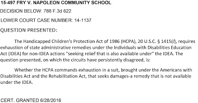

The U.S. Supreme Court has granted certiorari in Fry v. Napoleon Community Schools, 788 F.3d 622 (2015), a case where a girl with cerebral palsy was prevented for two years from bringing her service dog, trained primarily as a mobility impairment dog, into an elementary school. The school said that the girl already had a human aide as part of her Individualized Education Program (IEP) and that this aide was all she needed while attending the school. The family sued for damages, alleging violations of the Americans with Disability Act (ADA) and the Rehabilitation Act, but a federal district court in Michigan dismissed the matter because the parents had not pursued administrative remedies available to them. The Sixth Circuit affirmed, with a significant dissent, and now the Supreme Court has agreed to hear the matter.
|  |
| Statement of Question Presented to Supreme Court (Posted on Grant of Certiorari) |
{kind=link}
The service dog community needs to pay more attention to Fry v. Napoleon Community Schools than the case has so far received.
Ehlena and Wonder
The following summary of the case is drawn from the complaint, a report of the Department of Education's Office of Civil Rights, the district and circuit court opinions, and the petition for writ of certiorari.
Ehlena Fry was born with spastic quadriplegic cerebral palsy, a condition that affects her legs, arms, and body, and significantly limits motor skills and ability. She is not cognitively impaired but requires physical assistance for daily activities. In 2008, her pediatrician prescribed a service dog. Community efforts raised $13,000 to help Ehlena's parents pay for the training of a male goldendoodle named Wonder to become a service dog. Part of the reason for obtaining a poodle cross was that the non-shedding or low-shedding coat of such a dog generally makes it tolerable to people with allergies to dogs. (Golden and Labrador retrievers are among the most common breeds used in guide and other service dog work, and the Australian effort to stably interbreed labradoodles was in significant part intended to create a hypoallergenic guide dog.)
Prior to meeting the Frys, Wonder had received ten to twelve months of training at a service-animal training facility in Ohio. The family underwent ten days of training at the facility in October 2009 and Wonder began working with Ehlena at that time. Ehlena was five years old. Wonder is able to assist Ehlena with balance when she uses a walker, opens and closes doors for her, turns lights on and off, helps her take off her coat, helps her transfer to and from the toilet, and retrieves dropped items. Most of these skills fit within a category of service dog sometimes called a mobility impairment dog.
One parent was trained as Wonder’s handler because Ehlena was not physically strong enough to handle the dog on her own, though Ehlena herself was responsible for giving verbal commands to the dog. Thus, this was what is sometimes called a dual-handler arrangement and gave as much control to the child as possible. Wonder, Ehlena, and the parent passed a public access test (presumably something like the AKC Canine Good Citizen test) and were certified as a team by the training facility. The training facility requires that the team must return once a year for retesting and recertification. Once Ehlena can handle the service animal on her own, she and the dog will be recertified as a team of two.
The family and the pediatrician expected Wonder to accompany Ehlena at all times to facilitate her independence and to ensure that Ehlena and Wonder would bond after training. Before enrolling Ehlena in kindergarten for the 2009-2010 school year, Ehlena’s parents had informed the school administration that they were obtaining a service dog for Ehlena. The principal raised some concerns about allergies and liability, but the Frys believed that Wonder would be permitted to attend school with Ehlena. The Frys obtained letters from Ehlena’s treating physicians which stated that the service animal would increase Ehlena’s independence and help her improve her motor skills.
First Day of School with Wonder
After the first day that Ehlena attended kindergarten with the dog, October 23, 2009, the parents received a phone call from the principal who told them that Ehlena would not be able to bring the dog to school for the time being because other students had complained that they were fearful of the dog and the school needed to do more research before allowing Wonder to return to the school. Nevertheless, starting in December 2009, Ehlena attended school with Wonder, who helped her take off her coat and at least once retrieved her lunchbox when she dropped it.
At a meeting on December 11, 2009, the school administrators met with the family and were told about what the dog was trained to do and how it would increase Ehlena’s independence and reduce her reliance on the human aide. Stacy Fry, Ehlena’s mother, advised the Office of Civil Rights (OCR) that the administrators had told her they would take away the aide from Ehlena’s IEP services if the dog continued to come to school. The administrators cited other reasons for excluding Wonder including (1) allergies of other students and faculty; (2) fears or phobias of other students and staff; (3) concern that Wonder would have an accident in the building; (4) concern that Wonder would be a distraction to other students; and (5) Ehlena’s lack of need for the service animal because she had a human aide. On January 4, 2010, the Frys obtained another letter from one of Ehlena’s treating physicians stating that Ehlena would still need a human aide when using Wonder.
Individualized Educational Program Meeting
At an Individualized Education Program (IEP) meeting on January 7, 2010, the IEP team considered whether the service animal was necessary to provide Ehlena with a free appropriate public education (FAPE). The team believed that the issues to be resolved were (1) what disability-related educational need of the child would the service animal address; (2) would the service animal enhance or hinder Ehlena’s ability to progress in the general curriculum; (3) could Ehlena be responsible for the service animal; and (4) could the distraction created by the service animal be accommodated without comprising the learning environment. These questions were answered by the team in such a way as to preclude admission of the service animal to the school.
The IEP for Ehlena, signed by the Jackson County Intermediate School District Director and the principal of the Ezra Eby Elementary School, rejected the request of Ehlena’s parents to have Wonder accompany their daughter to school to enhance her independence, stating that the girl’s “physical and academic needs are being met through the services/programs/accommodations of the IEP.” The IEP provided that, in addition to the human aide who would work one-on-one with Ehlena, she would receive occupational therapy, physical therapy, speech language services, extended school year services, and resource program services.
Temporary Permission to Bring Wonder to Kindergarten Classes
At the January 7 meeting, the parents agreed to mediation to resolve issues relating to the service animal. The first mediation session occurred on January 29, 2010. On March 18, 2010, a physical therapist and a speech language pathologist that were treating Ehlena outside of the school sent a letter to the school administrators outlining how they incorporate Wonder into their therapy sessions. During those sessions, Wonder assisted Ehlena in directional control of her walker, helped Ehlena stabilize herself while transitioning into and out of her walker from a seated position or from the floor, provided posterior support to improve Ehlena’s sitting balance, stood behind or beside Ehlena when she was standing up for improved safety, and picked up dropped items. The letter indicated that adult stand-by assistance was still needed for added safety but would become less so as Ehlena’s independence increased.
The mediation resulted in an agreement that allowed Ehlena to bring Wonder to school for a 30-day trial period beginning on April 12, 2010, which was extended through the end of the school year on June 11. During that period, however, Wonder was required to remain in the back of the classroom and could not assist in Ehlena with many of the tasks he had been trained to perform for her. He was not even permitted to accompany or assist Ehlena during recess, lunch, computer lab, or in the library, and could not walk with her on the track during “Relay for Life,” a school play, or “field day.” Presumably some of these prohibitions were intended to keep the dog away from other children.
During the trial period, the school contacted the parents of other students and surveyed staff regarding their concerns with the presence of Wonder at the school. Among information received by the school was that one teacher and two students reported that they were allergic to dog dander, one teacher had a phobia about dogs, and one parent expressed concern about her child being in the presence of the dog because the child had been attacked by one several years before. Four parents said that they were concerned about the dog being a distraction, though only two of those parents had children in the same classroom as Ehlena.
School Looks for Wonder to Make Mistakes
During the trial period, the school maintained records regarding the presence of Wonder, and Stacy Fry, who appears to have come to school to be with the dog at the back of the room. The OCR report states that the school kept records of each time the service animal required more than one command or attempt to complete a task, the handler read a book or magazine, took notes, or typed on her cell phone, said anything to or responded to a staff person or another student, or left the room to take her other child to his classroom before the bell rang. The school also noted whenever Ehlena did not use Wonder but could have, or made a face when Wonder retrieved something for her that had slobber on it. The school apparently disapproved of any humor occurring in the bonding process. Thus, the school used the trial period not to increase staff and student awareness of the value of the dog but rather as a way of gathering evidence that it could use to argue against the dog's suitability for coming to the school with a student in the future.
The OCR report says that the school specifically did not allow Ehlena to use the service animal for toileting and that once she was required to demonstrate her use of the service animal while using the toilet, with the stall door open and four adults watching. The school also documented one barking incident at the end of one school day when the dog saw two boys roughhousing, and one growling incident, which occurred after school had ended. The dog obeyed Stacy Fry’s command to cease the action according to both the Frys and the school records. School officials obviously did not understand that any new service dog undergoes a period of adaptation to its responsibilities. Even guide dogs can become distracted. Wiggett-Barnard and Steel (2008), in a study of the experience of owning a guide dog, quoted one guide dog user complaining that his dog was easily distracted by squirrels when he walked near a garden. "My cane doesn't get distracted by squirrels," the man said. Service animals remain animals and users have to allow the dog to be a dog on occasion.
The OCR report says that the school specifically did not allow Ehlena to use the service animal for toileting and that once she was required to demonstrate her use of the service animal while using the toilet, with the stall door open and four adults watching. The school also documented one barking incident at the end of one school day when the dog saw two boys roughhousing, and one growling incident, which occurred after school had ended. The dog obeyed Stacy Fry’s command to cease the action according to both the Frys and the school records. School officials obviously did not understand that any new service dog undergoes a period of adaptation to its responsibilities. Even guide dogs can become distracted. Wiggett-Barnard and Steel (2008), in a study of the experience of owning a guide dog, quoted one guide dog user complaining that his dog was easily distracted by squirrels when he walked near a garden. "My cane doesn't get distracted by squirrels," the man said. Service animals remain animals and users have to allow the dog to be a dog on occasion.
Following the trial period, the school once again determined that it was not required to permit Wonder to accompany and assist Ehlena because it was meeting all of her education needs by providing her with a human aide. The school also declined to acknowledge Wonder as a service animal because Ehlena could not handle the dog on her own. As will be discussed below, this argument may have been based on the regulatory definition of "service animal" that was in effect at the time.
Office of Civil Rights Gets Involved
The Frys began homeschooling their daughter on July 30, 2010, and filed a complaint with the Office of Civil Rights in the U.S. Department of Education. The homeschooling, using an online curriculum, continued for two years.
The Office of Civil Rights issued its findings on the matter in a letter dated May 3, 2012. OCR determined that the evidence was sufficient to conclude that the school district had excluded Ehlena from “participation in their educational programs and activities when they refused to allow her to have her service animal accompany her in parts of the school’s program....”
The OCR findings add the significant facts that in addition to cerebral palsy, Ehlena “has a diagnosis of attention deficit hyperactivity disorder (ADHD) and has a history of seizures.” The latter fact is particularly important because of research indicating that service dogs sometimes begin spontaneously alerting in advance to medical episodes such as epileptic and diabetic seizures, which would be relevant to the potential consequences of separating a service dog from a child being served by the dog.
The school’s policies on service animals were, the OCR report notes, restricted to guide dogs, as to which a student would apparently only have to establish certification. For a guide dog in training, the student would have to establish that the dog was nevertheless covered by insurance. The OCR listed the failure to have a policy broad enough to cover service animals as a compliance concern. The OCR report also stated:
Additionally, the Policy requires a student seeking to use a service dog in the school environment to provide documentation of the dog's certification, whereas the Title II regulation explicitly states that public entities cannot require documentation, such as proof that the animal has been certified, trained, or licensed as a service animal. Moreover, the Policy does not specify the permissible inquires that a public entity can make and the circumstance in which the public entity may not make inquiries, such as when it is readily apparent that an animal is trained to do work or perform tasks for an individual with a disability. The Policy also does not specify the circumstances in which the service animal may be properly excluded, including the proper inquiries that must be made when the District believes a service animal presents a direct threat to others.
The OCR concluded that the denial of Ehlena’s use of her service dog violated both Title II of the Americans with Disabilities Act and section 504 of the Rehabilitation Act. The resolution agreement that the school and school district entered into with OCR did contemplate that, if Ehlena returned to the Ezra Eby Elementary School, the parents would have to provide a handler, who would have to undergo a criminal background check. Although schools have sometimes been required to assign minimal handling responsibilities to individual aides, this possibility does not seem to have been considered by OCR.
Subsequent to the OCR findings in May 2012, recognizing that the battle was lost, the school and the district agreed to permit Ehlena to attend school with Wonder beginning in the fall of 2012. In discussing Ehlena’s return with the principal of the school, however, the parents developed serious concerns that the administration would resent their daughter and make her return to school difficult. Instead, they enrolled Ehlena in another district where the staff welcomed both the child and the dog.
Frys File Lawsuit
On December 17, 2012, the Frys filed a complaint in federal court against Napoleon Community Schools, the school district, and the school’s principal, seeking damages for:
(1) denial of equal access to school facilities,
(2) denial of the use of Wonder as a service dog,
(3) interference with E.F.’s ability to form a bond with Wonder,
(4) denial of the opportunity to interact with other students at Ezra Eby Elementary School, and
(5) psychological harm caused by defendant’s refusal to accommodate E.F. as a disabled person.
The Frys based their claim on Title II of the ADA, section 504 of the Rehabilitation Act, and the Michigan Persons with Disabilities Civil Rights Act. The district court declined to exercise supplemental jurisdiction over the state law claim.
The defendants, no longer raising substantive objections to Wonder coming into the school, relied on the fact that the plaintiffs had not pursued additional administrative remedies available after the school had denied access to Wonder.
District Court and Circuit Court Decisions
Both the federal district court for the Eastern District of Michigan and the Sixth Circuit Court of Appeals resolved the issue in favor of the defendants, not on substantive issues having anything to do with the service dog but rather on the fact that the Frys could have pursued administrative remedies, including requesting a hearing under 20 U.S.C. 1415(f) from the school district’s determination at the end of the trial period that Wonder was not a service dog and the Frys were not entitled to have the dog accompany their daughter to school. Following that there could be an appeal under 1415(g).
The majority opinion of the Sixth Circuit acknowledged that the Frys, had they pursued procedural remedies, might have been able to show that having the dog in school would have been better for Ehlena:
The majority opinion of the Sixth Circuit acknowledged that the Frys, had they pursued procedural remedies, might have been able to show that having the dog in school would have been better for Ehlena:
If the human aide was not a sufficient accommodation, it was because he or she did not help E.F. learn to function independently as effectively as Wonder would have and perhaps because he or she was not as conducive to E.F.'s participating confidently in school activities as Wonder would have been…. [H}aving Wonder at school was important for E.F. to "form a bond" with the dog, a bond that would make Wonder a more effective service animal "outside of school." The Frys characterize Wonder's independent value to E.F. as assistance with specific physical tasks, enabling her "to develop independence and confidence," and helping her "to bridge social barriers." Thus if the human aide was not a sufficient accommodation relative to Wonder, that was because he or she did not increase E.F.'s ability to perform physical tasks and function confidently and independently outside of school. One might also infer, though the Frys do not allege it directly, that relying on only a human aide without the additional presence of a service dog would inhibit E.F.'s sense of confidence and independence, as well as her ability to overcome social barriers, in school.
Without judging whether the pleadings were sufficient to put Wonder’s benefits to Ehlena in school in issue, it is obvious that being able to transfer to and from a toilet with the assistance of the dog, even if Stacy Fry or the aide had to be present until Ehlena developed the necessary strength and coordination, would have been preferable to requiring her to be dependent on the human aide for this function indefinitely.
The majority concluded that the harms of not permitting Wonder to attend school with E.F. “fell under the scope of factors considered under IDEA [Individuals with Disabilities Education Act] procedures.” The court cited the 2008 decision in Cave v. East Meadow Union Free School District, 514 F.3d 240 (2d Cir. 2008), which stated that a “request for a service dog to be permitted to escort a disabled student at school as an ‘independent life tool’ is hence not entirely beyond the bounds of the IDEA’s educational scheme.”
Judge Daughtrey’s Dissent
Circuit Judge Martha Craig Daughtrey correctly saw that the Frys “were not dissatisfied with Ehlena’s educational program,” but were maintaining rather that “for Ehlena to develop the confidence necessary to achieve independent mobility, she and Wonder needed to be together around the clock, including during school hours.” The claim was thus “noneducational in nature….” Allowing Ehlena to develop basic mobility and more independent motor skills “is not a subject taught in elementary school.”
Judge Daughtrey remarked on the school’s small-minded threat to eliminate the human aide from Ehlena’s IEP “if her parents insisted on having Wonder accompany Ehlena in school,” and saw the discrepancy in the policy between guide and service dogs as also making the concerns about allergic reactions of other students and the staff rather nothing but an excuse:
Even more astounding, the school district refused to recognize Wonder as a service dog despite his official certification, possibly because school policy explicitly allowed "guide dogs”—but not “service dogs”—on school premises, giving lie to the claim that Wonder was objectionable because he might cause allergic reactions in staff members and students or become a distraction to others.
Judge Daughtrey correctly labels any distinction between guide dogs and service dogs, from a legal perspective, as “purely semantic.” She finds a incisive analogy:
If, for example, the school district declined to permit Ehlena to come to school altogether, that action would violate both the ADA and the Rehabilitation Act, by denying her access to a public facility and its publicly-funded program, and it would also violate the IDEA, by depriving her of a "free appropriate public education." On the other hand, if the school lacked ramps providing access to the building by someone using a wheelchair or walker, rectification of such an ADA violation would not likely be accomplished by modification of an IEP. In short, the ADA's focus is on ensuring access; the IDEA's focus is on providing individualized education. The point missed by both the district court and the majority is that for Ehlena, Wonder functions as an access ramp — not just in terms of the school building but, more significantly, in all aspects of her life.
Another analogy might be to say that the school effectively concluded that Ehlena could have only one device related to her disability with significance beyond her educational objectives. The fact that a multi-faceted mobile sentient and trained animal functions as something of a super-prosthetic was not considered. (In 2001, Mary Michelle Camp, quoting earlier research, referred to service dogs as "the ultimate assistive technology.")
The human aide, as the judge observes, is “not there to help Ehlena develop and maintain balance and mobility, but to ensure her ability to progress in her academic program. To equate that assistance with the function of the service dog, as the school district did and the majority appears to approve, is ludicrous….” The problem was not with the IEP at all:
[W]hat is clear from the record — the complaint and attached exhibits — is that the request for a service dog would not require a modification of Ehlena's IEP, because that request could be honored simply by modifying the school policy allowing guide dogs to include service dogs. That wholly reasonable accommodation — accomplished by a few keystrokes of a computer — would have saved months of wrangling between Ehlena's parents and school district officials; it would have prevented her absence from public school during the two years she was home-schooled following the school's decision; it would have avoided the disruption of relocating the child and her service dog to another school district; and it would have mooted the question of exhaustion and eliminated the necessity of litigation that has ensued since this action was filed. (emphasis added)
Unfortunately, this is also a blueprint to other schools looking for mechanisms to resist the admission of non-guide service dogs: don’t modernize any policy that provides that guide dogs are to be accommodated but which does not mention other service animals!
I have to wonder how the school would have reacted to a medical alert dog, one that alerts in advance to epileptic or diabetic episodes. The OCR report stated that Ehlena had a history of seizures. As I discuss in Chapter 25 of Canine Olfaction Science and Law, there is considerable debate as to whether medical alert dogs are operating on their sense of smell, on their ability to detect minute changes in behavior of humans, or on some combination of both. As new types of medical alert dogs are developed, it may be found that detection of different conditions brings in different parts of the canine sensory apparatus. What is clear, however, is that for most such alerting functions the dog has to be relatively close to the individual to detect the change. Requiring such a dog to remain at the back of a classroom could potentially be tragic. It should also be noted that alerting to medical conditions is sometimes spontaneous, so a dog trained for mobility purposes might on occasion begin to alert to episodes of a child like Ehlena.
Some school systems, recognizing that the prescription of a service animal is a medical matter, provide the IEP team the opportunity to approve or deny a parental request for a service animal to accompany a student in school facilities but expect that, if the form is properly filled out with individualized tasks identified, the IEP team will check the "Approved" box.
| IEP or 504 Team Approval Section (Parental Request for Service Animal Approval) |
{kind=link}
Solicitor General Recommends Supreme Court Grant Certiorari
The Supreme Court invited the Solicitor General to express the government’s views, and in May 2016 the Solicitor General recommended that the petition for certiorari should be granted. The Solicitor General’s brief reviewed the history of the IDEA and the relief available under it, which does not include money damages, and described the exhaustion requirement that was central to the defense in Fry. The Solicitor General stated that the Sixth Circuit had “erred in holding that [the Frys’] claims were properly dismissed…” under the IDEA. The brief noted that the Sixth Circuit “appeared to ground its analysis on a perceived need ‘to preserve the primacy the IDEA gives to the expertise of state and local agencies’ in determining whether a child has been denied a [Free Appropriate Public Education] under the IDEA.”
Since at least four circuit courts would generally follow the Sixth Circuit’s approach, but a number of others might not for a variety of reasons, and because such disputes are recurring, the Solicitor General argued that the Supreme Court should hear the matter. On June 28, the Supreme Court agreed that it should resolve the persistent disagreement among the circuits.
Since at least four circuit courts would generally follow the Sixth Circuit’s approach, but a number of others might not for a variety of reasons, and because such disputes are recurring, the Solicitor General argued that the Supreme Court should hear the matter. On June 28, the Supreme Court agreed that it should resolve the persistent disagreement among the circuits.
What the Supreme Court Will Consider
The Supreme Court’s grant of the motion for certiorari stated the question presented to it was the following:
The Handicapped Children's Protection Act of 1986 (HCPA), 20 U.S.C. § 1415(l), requires exhaustion of state administrative remedies under the Individuals with Disabilities Education Act (IDEA) for non-IDEA actions "seeking relief that is also available under" the IDEA. The question presented, on which the circuits have persistently disagreed, is:
Whether the HCPA commands exhaustion in a suit, brought under the Americans with Disabilities Act and the Rehabilitation Act, that seeks damages—a remedy that is not available under the IDEA.
Read alone, this seems to have nothing to do with service dogs and, admittedly, it is possible that the Supreme Court could rule on the matter with little mention of the dog involved beyond the fact that the reason that administrative remedies were not exhausted had to do with the parents’ concern that letting their daughter go to school without the dog would break the developing bond between the two.
It is also possible that the Supreme Court, however it rules, may make no mention of the distinction the school’s policy effectively made between guide and service dogs. Yet, Judge Daughtrey’s dissent tears away the façade that a totally procedural perspective on the case builds in front of the truth about what is really going on: a school that did not understand what a mobility impairment dog is, how important it can be to the life of a child, was able to hide behind the sham of a procedural nightmare and avoid admitting the dog for long enough to force the parents to find a different school system.
The Changing Spectrum of Service Dog Functions
After World War I, members of the German Shepherd Club of Germany, who had trained dogs for a variety of functions during the war, decided that the ambulance dog function might be adapted to civilian life. Dogs were trained to lead wounded soldiers back to aid stations, or more frequently brought stretcher bearers or other help to wounded who could not move themselves. Thus, they were historically the first mobility impairment dogs. Soldiers could be wounded in many ways, but after the war the German Shepherd Club decided to focus on soldiers who had been blinded, whose mobility was being impaired by a limitation of vision. For this peacetime function, dogs fitted with stiff leads or halters were paired with soldiers living in rural areas as it was thought that dealing with traffic might be too much to ask of the dog. It was soon realized that this was incorrect.
Visiting Switzerland, Dorothy Harrison Eustis of the United States began working at a guide dog training program, and in 1927 wrote an article for the Saturday Evening Post that received widespread attention in the U.S. Soon after she returned and began training dogs for blind people and founded The Seeing Eye. For several decades, guide dogs were the only dogs performing such a specialized medical function in the U.S. and other types of dogs were not discussed very often in the press until the 1970s and after. The first U.S. program of which I am aware to train dogs specifically with mobility impairment functions began to do so in 1973 (Rintala et al. 2002).
The 1991 ADA regulations, 28 CFR 36.104 (56 Fed. Reg. 35544, July 26, 1991), defined a service animal as follows:
Service animal means any guide dog, signal dog, or other animal individually trained to do work or perform tasks for the benefit of an individual with a disability, including, but not limited to, guiding individuals with impaired vision, alerting individuals with impaired hearing to intruders or sounds, providing minimal protection or rescue work, pulling a wheelchair, or fetching dropped items. (emphasis added)
The first thing to notice about this definition, for current purposes, is that it only lists two specific types of service animals, guide dogs and signal dogs, the latter now more commonly referred to as hearing dogs. The second thing to notice is that one function that is acknowledged as within the sphere of service dog responsibilities is “pulling a wheelchair,” though the concept of “mobility impairment dog” as a type of service animal is still in the future in 1991. (This definition applied to public accommodations but not to public entities, such as the school involved here.)
Now come forward 19 years to the revisions of the ADA regulations in 2010 (75 Fed. Reg. 56236, September 15, 2010), where the Department of Justice seeks to build a broader concept that can deal not only with traditional types of service animals but also to allow for the development of more types in the future. (Another change in 2010 was that public entities were covered by service animal requirements.) Several sentences irrelevant to the current discussion are deleted, while those having to do with guide and mobility impairment dogs are italicized:
Service animal means any dog that is individually trained to do work or perform tasks for the benefit of an individual with a disability, including a physical, sensory, psychiatric, intellectual, or other mental disability…. The work or tasks performed by a service animal must be directly related to the handler’s disability. Examples of work or tasks include, but are not limited to, assisting individuals who are blind or have low vision with navigation and other tasks, alerting individuals who are deaf or hard of hearing to the presence of people or sounds, providing non-violent protection or rescue work, pulling a wheelchair, assisting an individual during a seizure, alerting individuals to the presence of allergens, retrieving items such as medicine or the telephone, providing physical support and assistance with balance and stability to individuals with mobility disabilities, and helping persons with psychiatric and neurological disabilities by preventing or interrupting impulsive or destructive behaviors…. (emphasis added)
Notice that the term “guide dog” does not even appear within the definition. The preamble explains:
Traditionally, service dogs worked as guides for individuals who were blind or had low vision. Since the original regulation was promulgated, service animals have been trained to assist individuals with many different types of disabilities. (75 Fed. Reg. 56269)
Signal dogs are now not mentioned at all, though alluded to in the reference to “alerting individuals who are deaf or hard of hearing to the presence of people or sounds….”
The emphasis has thus come to be on the training, and that the “work or tasks” the dog is trained to do must relate directly to the “handler’s disability.” In 2011 (76 Fed. Reg. 13285, March 11, 2011), the word “handler’s” was changed to “individual’s” because it was realized that, with certain types of service dogs such as autism service dogs (and in fact the dog in issue here), the individual with the disability that the dog serves may, in fact, not be the person who handles the dog, i.e., the person who gives it every command. This change again reflects a desire to have a functional definition that would allow trainers to devise training programs for dogs to work with individuals who have any disability where the dog’s service could help that individual achieve as normal a life as possible.
This conceptual change in what a service dog can do was adopted to various degrees by other agencies, and understood by many courts, but there are legacy decisions and rules that refer only to guide dogs, or to guide and signal dogs, and it is to this day not hard to find cases where employees of various businesses deny entrance to someone with a service dog on the incorrect assumption that the only real service dog is a guide dog. Cases with facts of this sort could fill a good portion of a treatise.
The Napoleon Community school system had, buried within its procedures, one of these remnants from a time when guide dogs were the only service dogs that almost anyone had, or anyone even knew about. This is not an uncommon situation. A local state park near where I live has an entrance booth with a sign taped to the ranger’s window stating, “No Dogs Allowed Except Guide Dogs.” I have asked several employees about the sign and been assured that it no longer applies, but that even when it did it was interpreted by the staff as meaning service dogs. The current rule is that all dogs have to be on leash, but even my dog, a registered therapy dog, or even a pet, is acceptable. “We’ve asked for a new sign a million times,” one ranger assured me, “but they never send us one.”
Conclusions
With a service dog, dog and human become something of a unit, physically united in performing certain tasks, even combining their intelligence, their minds, to solve problems that neither could alone. It takes time for that type of joint functioning to develop, regardless of the type of service dog.
Service dogs, because they may spend between one and two years developing the skills they will eventually use, often with little or no contact with the person they will serve, must be able to develop a stronger bond with the person with whom they are eventually paired later in their lives than is often true of pets. Such dogs and their ultimate users and masters must then progress through an adaptation process where complicated sequences of behaviors are initiated by one or the other, with each developing intuitions regarding the responsibilities and timing of the other. This is now a scientific subject being investigated by a number of laboratories around the world.
Creating additional separations, as occurred for parts of the day in the trial period when Wonder was permitted to enter the school, or for a much longer period each day, had the Frys accepted the school’s exclusion of Wonder instead of homeschooling Ehlena, could have damaged the ultimate relationship between Ehlena and Wonder. Wonder could have lost training and Ehlena could find the separations sufficiently frustrating that she could have become reluctant to work through the process of learning to use the dog, delaying her own path towards greater independence.
Creating additional separations, as occurred for parts of the day in the trial period when Wonder was permitted to enter the school, or for a much longer period each day, had the Frys accepted the school’s exclusion of Wonder instead of homeschooling Ehlena, could have damaged the ultimate relationship between Ehlena and Wonder. Wonder could have lost training and Ehlena could find the separations sufficiently frustrating that she could have become reluctant to work through the process of learning to use the dog, delaying her own path towards greater independence.
To say that the Ezra Eby Elementary School educational team has more expertise than a court to develop an appropriate educational program for a child is to ignore the fact that this particular school’s educational team obviously did not understand the importance of the dog as a life companion for someone with a serious disability, a companion that could not only be a friend but effectively a prosthetic, a multifaceted and self-operating tool, something that for Ehlena’s condition likely has no medical or mechanical equivalent. Further, the educators did not understand, or did not care, that separating a child from her service dog, by keeping the dog from coming to school or even by insisting that it remain at the back of the classroom, could have consequences in her learning to use the animal and bond with it so that the long-term objective of maximum independence could be reached as quickly as possible.
Part of the problem comes from the fact that the Department of Education, unlike most other cabinet-level departments, has not issued comprehensive regulations regarding service animals. This was noted by the Government Accountability Office in 2009 for higher education (GAO-10-33), but is true of all educational levels. Since schools have unique issues with regard to service animals, such attention from the Department is long overdue.
Part of the problem comes from the fact that the Department of Education, unlike most other cabinet-level departments, has not issued comprehensive regulations regarding service animals. This was noted by the Government Accountability Office in 2009 for higher education (GAO-10-33), but is true of all educational levels. Since schools have unique issues with regard to service animals, such attention from the Department is long overdue.
It is to be hoped that the Supreme Court's resolution of the procedural issue will not lead to more barriers for children with disabilities who receive the significant benefits that can be offered by highly trained service dogs.
Thanks for corrections and suggestions from Veronica Morris, Brad Morris, Bart Sherwood, and L.E. Papet.
{kind=link}
{kind=link}
{kind=link}